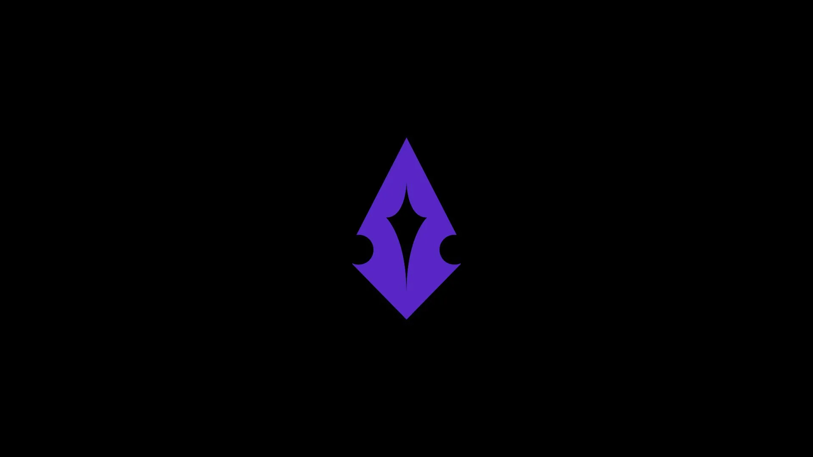
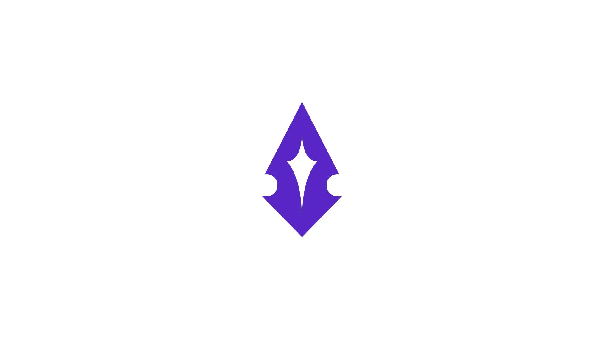
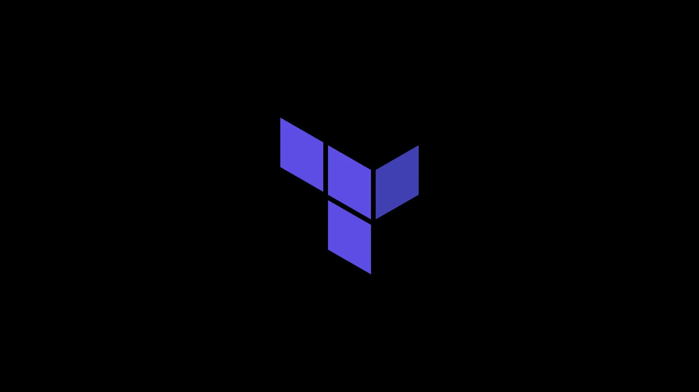
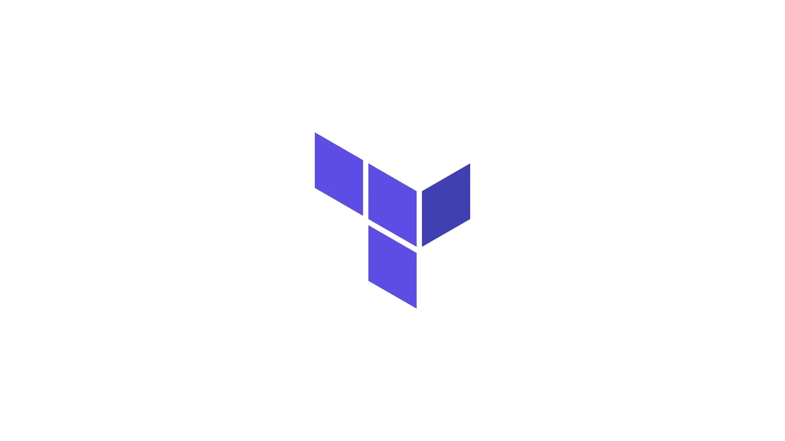
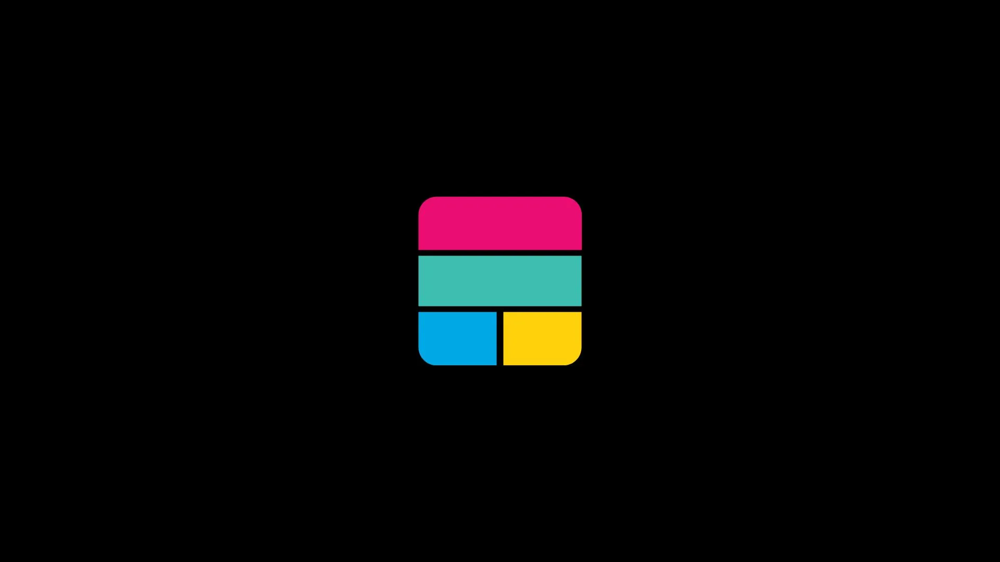
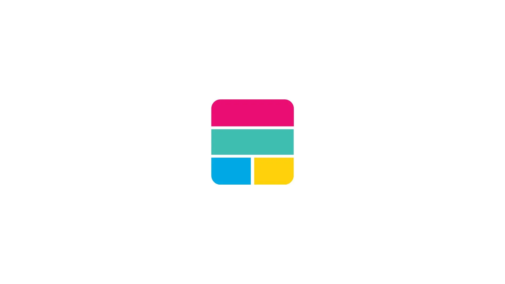

Ingénieur DevOps & Cloud
Automatisation. Fiabilité. Performance.
Optimisons ensemble.
À propos
Ingénieur DevOps & Cloud passionné par l'automatisation, l'infrastructure as code et la construction de systèmes fiables. Formé à l'École 42 et son système d'apprentissage peer-to-peer, j'apporte une approche pratique à l'infrastructure cloud et au CI/CD.
En savoir plus →Projets
Glasck
Plateforme SaaS — Co-fondateur, Infrastructure Lead & Ingénieur DevOps. Cluster Docker Swarm en production avec reverse proxy Traefik et CI/CD.


AWS Infrastructure Automation
Provisionnement AWS automatisé avec Terraform (VPC, EC2, Security Groups, IAM) et Ansible pour la gestion de configuration.


Transcendence
Application web multijoueur full-stack — Projet final École 42. Conteneurisée avec Docker, backend Fastify/TypeScript, frontend React/Next.js.


Plus de projets
Découvrez-en plus sur GitHub — C/C++, Python, scripts Shell, et plus.